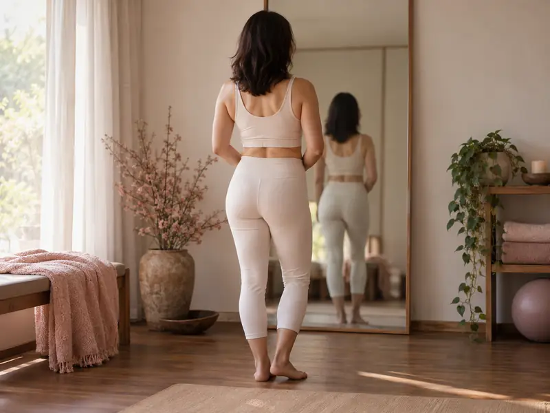
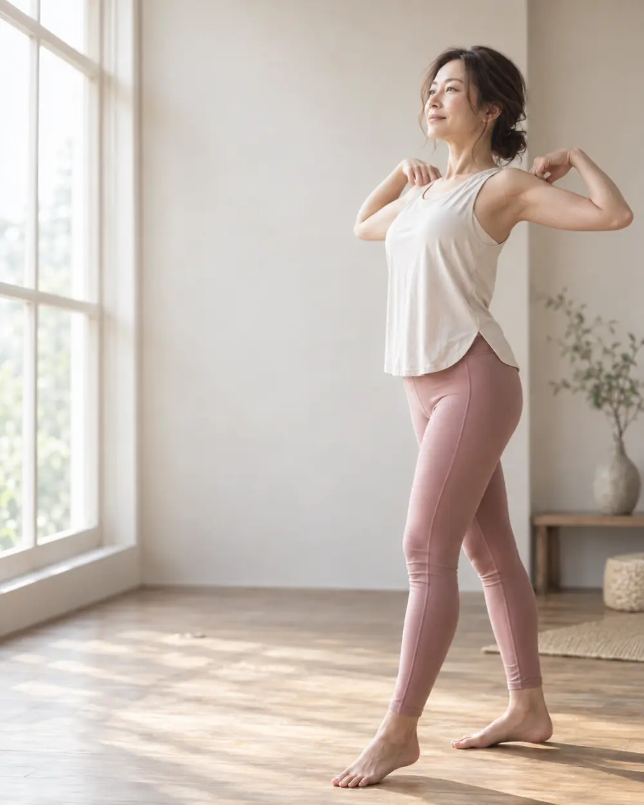
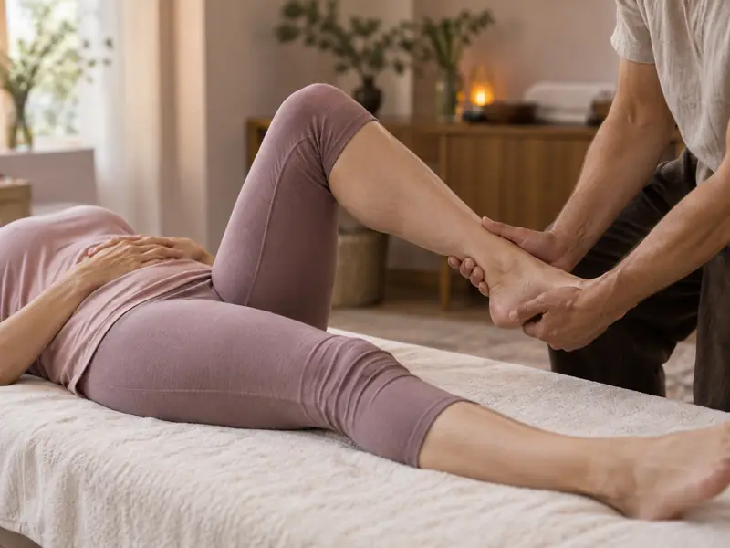
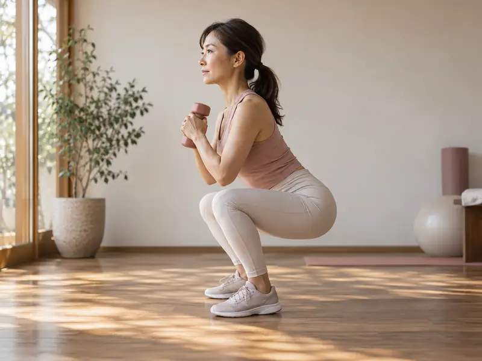
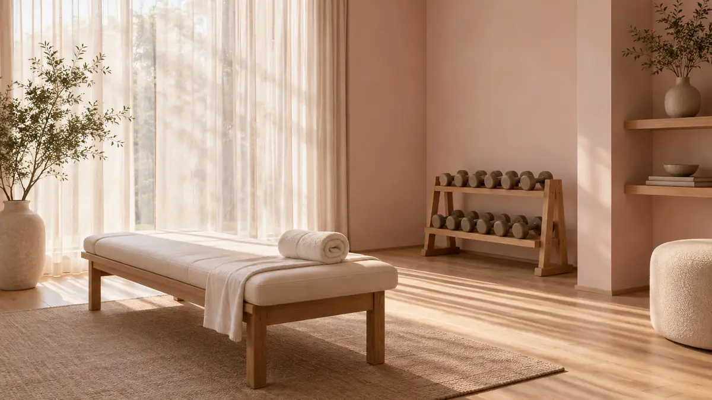

01
今の身体を確かめる
姿勢、関節の動く範囲、身体の使い方のクセを見ます。あわせて、これまでの運動経験、気になっている部分、生活のリズムを伺います。ここで分かったことが、その日の内容と、通うペースの根拠になります。

イメージ写真
八丁堀駅・新富町駅から徒歩5分完全個室・完全予約制
40代からの身体づくりは、頑張る量ではなく順番で変わります。
まず今の身体を確かめて、整えてから、あなたに合う運動を。
ストレッチとトレーニングを組み合わせる、完全プライベートのジムです。
初回体験 80分 3,300円（税込） カウンセリング・身体チェック込み／ウェア・タオル・お水は無料
どれも、あなたがだらしないからではありません。
優先順位を家族に譲ってきた時間が、それだけ長かったということです。
これまで試したものがうまくいかなかったとき、たいていは三つのどれかが噛み合っていません。
どれも、やる気ではなく「合っていたかどうか」の話です。
※ 身体の変化の原因は、年齢や生活だけで決まるものではありません。当ジムでは原因を決めつけず、いまの状態を確認したうえで進め方をご提案します。
整えることと鍛えることを別の場所で受けると、その日の身体の状態は引き継がれません。
D/LIGHTは、評価からストレッチ、トレーニングまでを同じ個室で、同じ担当者が続けて行います。

01
姿勢、関節の動く範囲、身体の使い方のクセを見ます。あわせて、これまでの運動経験、気になっている部分、生活のリズムを伺います。ここで分かったことが、その日の内容と、通うペースの根拠になります。

02
硬くなっている部分を、パーソナルストレッチでほぐします。動く範囲が広がると、運動で狙った場所に効かせやすくなり、無理な代償動作も起こりにくくなります。

03
整えた状態で、その日にできる運動を行います。重さや回数は、体力ではなく「今日の身体」に合わせて決めます。自宅でも続けられる動きを、その場でお伝えします。
ストレッチだけで体重が落ちるわけではありません。整えるのは、鍛えるための準備です。体型や体重の変化は、運動と生活の積み重ねによって少しずつ進みます。

いずれも代表・奥野個人の指導実績です（年代・性別・目的を問いません）。40代女性のダイエット成功人数ではありません。
お客様の声、ビフォーアフター、成功率は、ご本人の許可を得た実データが揃うまで掲載しません。
「痩せたい」の奥には、たいてい別の言葉があります。写真に写るのが苦にならない、動くのが億劫でない、そういう日常のほうが本当の目的です。
体重だけを急いで落とす方法はあります。ただ、その多くは戻りやすく、身体にも生活にも負担を残します。私は、いまの身体でできることから始めて、続けられる形に落とすやり方を選んでいます。
ストレッチの資格とトレーニングの資格の両方を持っているのは、整えることと鍛えることを別の話にしたくないからです。その日の状態を見て、ほぐす時間と動かす時間の配分を決めます。体験から入会後のセッションまで、私が担当します。
運動が初めての方も、何度か続かなかった方も、まず今の身体を一緒に確認するところからお付き合いします。
指導歴10年／累計1,000名以上を担当／セッション1万件以上
NSCA-CPT・JATI-ATI・健康運動実践指導者・日本ストレッチング協会認定資格
体験のあと、続ける場合
| 入会金 | 33,000円（初回のみ） |
|---|---|
| 月2回・50分 | 19,800円／月 |
| 月4回・50分 | 37,400円／月 |
| 月4回・80分 | 56,100円／月 |
| 都度払い | 50分 12,000円／80分 18,000円（入会金・回数の縛りなし） |
| LINE食事指導 | 29,800円／月・希望される方のみ |
大丈夫です。初回はまず身体の状態を確認するところから始めます。その日にできる動きだけで組み立てるので、体力に自信がなくても受けられます。周りの目を気にせず動けるよう、完全個室・完全予約制です。
はい、お子さま連れでお越しいただけます。ただし託児サービスや保育士の常駐はありません。セッション中は同じ個室内で過ごしていただく形になりますので、ご予約時にお子さまの人数と年齢をお知らせください。
体験や通常のセッションに食事制限は含まれていません。ご希望の方だけ、LINEでの食事指導を別料金（月29,800円・税込）でご利用いただけます。申し込まなければ料金は発生しません。
手ぶらでお越しいただけます。ウェア・タオル・お水は無料でご用意しています。着替えは個室内で行っていただけます。
体験から入会後のセッションまで、代表の奥野雄大が担当します。担当者が毎回替わることはありません。完全個室・完全予約制のため、ほかのお客様と顔を合わせることもありません。
ご予約時間の24時間前まで、変更・キャンセルは無料です。体験のご予約も同じ扱いです。それ以降のキャンセルは1回分の消化、または所定のキャンセル料となります。
無理な勧誘は行いません。体験の最後に、今の身体の状態と、続けるとしたらどう進めるかをご説明します。その場で決めていただく必要はなく、持ち帰ってご検討いただけます。
感じ方には個人差があり、期間や数値をお約束することはできません。身体の動かしやすさは比較的早い段階で実感される方が多く、体型や体重の変化は運動と生活の積み重ねで少しずつ進みます。初回に測った姿勢や可動域を定期的に見直し、変化を一緒に確認していきます。
減量幅をお約束することはできません。短期間で大きく落とす方法は、戻りやすく身体への負担も大きいため、当ジムでは推奨していません。続けられる範囲で、体重だけでなく姿勢や体型の変化も含めて見ていきます。
その日の状態に合わせて内容を調整します。ストレッチや軽い運動だけに切り替えることもできますので、当日に遠慮なくお伝えください。24時間前までであれば、変更・キャンセルも無料です。
※ 建物の入口が分かりにくい場合は、LINEでご連絡ください。すぐにご案内します。
80分・3,300円（税込）。カウンセリングと身体チェック、ストレッチ、トレーニングまで一通り受けられます。
当日に決める必要はありません。合わなければ、そこで終わりで大丈夫です。